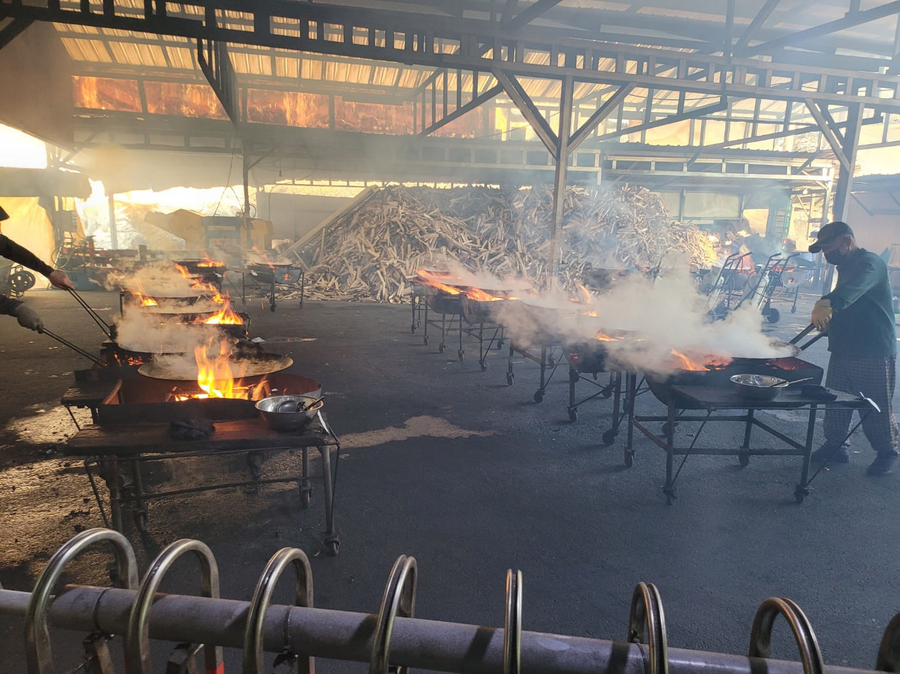
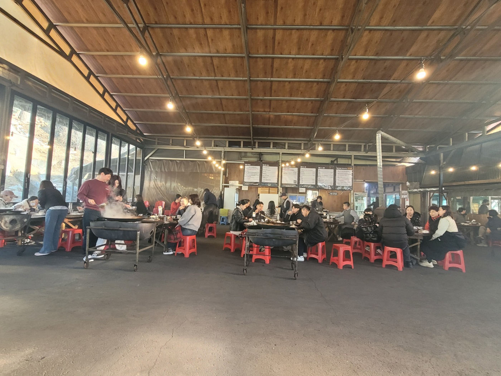
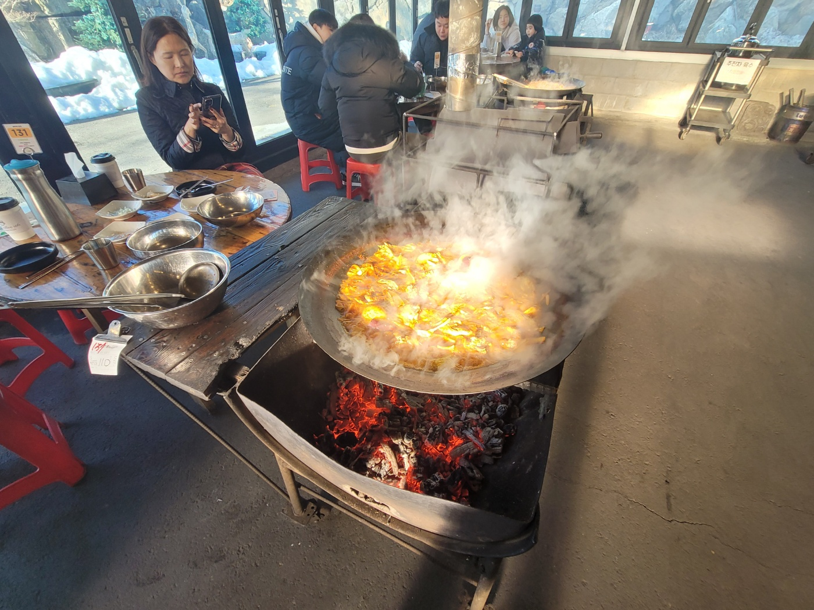

오늘 16년차 결혼 기념일이다.
한 해 지나가는 체감 속도가 점점 빨라지는 기분은 어느 누구나 동일할 듯 하다.
이전 학생때는 어른들 말씀을 들었을때 이해할 수 없었는데 이제 내가 그 위치가 되니
너무 공감이 되고 앞으로 남은 시간을 소중하게 보낼 수 있도록 더 생각하며, 생활해야할 듯 하다.
와이프가 맛집 하나를 찾았는데 닭볶음탕 전문점으로 여러 방송 프로그램에 출현한 집이라고 해서
모처럼 드라이브 할겸 가기로 했다.
간단히 서치해서 해당 식당 내용을 보니 장작나무로 직접 때워서 솥뚜껑으로 요리하여 맛이 틀리다고 하는데
은근히 기대가 된다.
준비를 하고 집에서 오전 12시쯤 출하였는데 예상시간은 1시간반정도 였다.
아직 오전에는 날씨가 쌀쌀했지만 오후가 되면서 약간은 따뜻한 기운이 돌면서 날씨도 좋아 나들이 하기에는 무난했다.
보조석에서 와이프는 유투브로 컬투쇼를 틀어놓고 함께 듣다가 어느덧 조용히 잠들어 있는 모습이였다.
예전에 내가 운전면허 없을때 보조석에서 졸고있으면 혼다고 했는데... ㅡ_ㅡ;;
해당 식당 이름이 '산골농장'인데 장소에 도착하니 시간이 오후3시쯤 되었는데 생각보다 꽤 걸렸다.
주차할 수 있는 장소가 조그만하게 여러 군데로 되어 있었고 제일 넓은 장소에 주차한 후 식당으로 이동하니
접수처가 따로 있어 기계로 웨이팅 등록하였는데 대기순서가 32번재라 시간상으로 1시간 정도 걸린다하여
오는길에 커피샾이 있어 간단히 커피 한잔하면서 시간을 보내고 식당에 입장할 수 있었는데
출입구쪽에 넓은 공간에서 장작나무로 요리하는 모습을 볼 수 있었다.

자리를 배정받고 접수한 순서로 요리가 나오는거라 좀 더 시간이 소요된다고하여
다른 손님들 먹는 모습이나 식당 내부 구경을 하고 있었다.


오후 4시30분쯤 드디어 닭복음탕이 나오는데 바퀴가 달린 리어카형태의 위에 솥뚜껑이 놓여있는 상태로
정말 비주얼적으로 대박이였다.

다리를 먹는데 치킨으로 먹던 다리보다 2배정도 크고 날개윙 크기가 일반 다리만 하고 식감도 쫄깃쫄깃하여
일반 닭이 아니라는 것을 알 수 있었다.
그리고 부과적으로 감자외의 고구마도 있었는데 맛이 달짝하여 은근히 궁합이 잘 맞았고, 어느 누구나
맛있게 먹을 수 있을거라 생각했다.
마지막에는 당연히 볶음밥을 1인분 추가하여 먹고 남은 복음탕은 포장하였는데
사리 좀 추가해서 4명이서 먹을 수 있는 양으로 보였다.
식당 정보는 다음과 같다.
산골농원 솥뚜껑닭볶음탕
주소: 경기 가평군 설악면 어비산길99번길 75-7 산골농원
전화번호: 031-584-7415